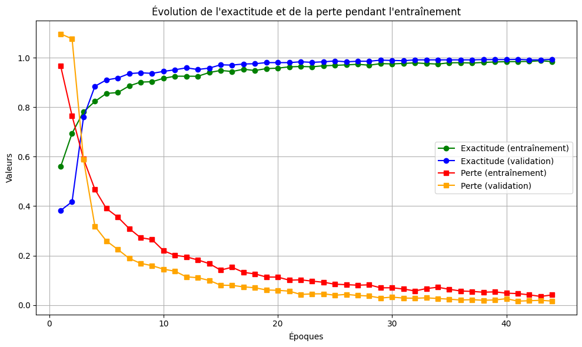

Classification des tumeurs cérébrales à partir d’IRM : Modélisation et évaluation
Abstract
Accurate classification of brain tumors from magnetic resonance imaging (MRI) is essential for guiding therapeutic decisions and improving patient outcomes. In this study, we propose a deep learning approach based on transfer learning with the pre-trained EfficientNetB5 convolutional neural network. A dataset of 6 012 T1-weighted MR images comprising gliomas (2 004 images), meningiomas (2 004 images), and other tumor types (2 004 images) was split into training (70 %), validation (15 %), and test (15 %) sets. Images were resized to 224 × 224 pixels, normalized, and augmented through random rotations (±15°), zooms (±20 %), and horizontal flips. EfficientNetB5’s convolutional base was frozen up to layer 95, and a custom classifier head (GlobalAveragePooling2D → Dense(128, ReLU) → Dense(3, softmax)) was fine-tuned using the Adam optimizer (learning rate 1 × 10⁻⁵) with early stopping on validation loss.
On the independent test set (907 images), our fine-tuned EfficientNetB5 achieved an overall accuracy of 99.78 %, with only three misclassifications (2/906). Per-class metrics were as follows:
Glioma: Precision 99,67 %, Recall 100 %, F1-score 99,83 % (support 302)Meningioma: Precision 100 %, Recall 99,34 %, F1-score 99,67 % (support 302)Other tumors: Precision 99,67 %, Recall 100 %, F1-score 99,83 % (support 302)
Résumé
La classification précise des tumeurs cérébrales à partir de l’imagerie par résonance magnétique (IRM) est essentielle pour guider les décisions thérapeutiques et améliorer les résultats pour les patients. Dans cette étude, nous proposons une approche d’apprentissage profond basée sur l’apprentissage par transfert avec le réseau neuronal convolutionnel EfficientNetB5 pré-entraîné. Un ensemble de données de 6 012 images RM pondérées en T1 comprenant des gliomes (2 004 images), des méningiomes (2 004 images), et des autres types de tumeurs (2 004 images) a été divisé en ensembles d’entraînement (70 %), ensembles de validation (15 %), et ensembles de test (15 %). Les images ont été redimensionnées à 224 × 224 pixels, normalisées et augmentées par des rotations aléatoires (±15°), des zooms (±20 %) et des retournements horizontaux. La base convolutive d’EfficientNetB5 a été gelée jusqu’à la couche 95, et une tête de classificateur personnalisée (GlobalAveragePooling2D → Dense(128, ReLU) → Dense(3, softmax)) a été affinée à l’aide de l’optimiseur Adam (taux d’apprentissage 1 × 10-⁵) avec arrêt anticipé sur la perte de validation.
Sur l’ensemble de test indépendant (907 images), notre EfficientNetB5 affiné a atteint une précision globale de 99,78 %, avec seulement trois erreurs de classification (2/906). Les mesures par classe sont les suivantes :
Gliome: Précision 99,67 %, Rappel 100 %, F1-score 99,83 % (support 302)Méningiome` : Précision 100 %, Rappel 99,34 %, Score F1 99,67 % (support 302)
Autres tumeurs: Précision 99,67 %, Rappel 100 %, F1-score 99,83 % (support 302)
Introduction
Les tumeurs cérébrales représentent un enjeu majeur de santé publique en raison de leur complexité diagnostique et de leurs implications cliniques graves. Classifier précisément ces tumeurs, notamment les méningiomes, les gliomes et les tumeurs hypophysaires, est essentiel pour guider les décisions thérapeutiques et améliorer le pronostic des patients (WHO2021?).
Selon la 5e édition de la classification de l’Organisation Mondiale de la Santé (OMS), une approche intégrée reposant à la fois sur des critères histopathologiques et moléculaires est désormais recommandée pour le diagnostic des tumeurs du système nerveux central (WHO2021?). Cependant, l’interprétation des images médicales, en particulier des IRM cérébrales, reste un défi complexe et chronophage pour les professionnels de santé. Dans ce contexte, les méthodes d’intelligence artificielle, notamment les réseaux de neurones convolutifs (CNN), ont montré un potentiel prometteur pour automatiser la classification des tumeurs à partir d’images IRM.
Une revue menée par Xie et al. (Xie et al. 2022) souligne les avancées récentes dans l’application des CNN à la classification des tumeurs cérébrales, en insistant sur les défis techniques rencontrés comme le surapprentissage, le déséquilibre des classes, ou encore la nécessité d’intégrer la classification moléculaire. D’autres travaux, tels que celui de Rasheed et al. (Rasheed et al. 2023), proposent un modèle CNN personnalisé pour différencier automatiquement les IRM de trois types de tumeurs avec une grande précision, tout en mettant en avant l’importance du prétraitement des images pour améliorer la performance du modèle.
En parallèle, Tummala et al. (Tummala et al. 2022) introduisent une approche combinée utilisant les transformeurs visuels (Vision Transformers, ViT) avec les CNN pour augmenter la robustesse et la précision du modèle, démontrant ainsi la pertinence des modèles hybrides. Dans le même esprit, Srinivasan et al. (Srinivasan et al. 2024) conçoivent un modèle profond et hybride adapté à la classification multi-classes, en combinant plusieurs architectures CNN avec des stratégies d’optimisation.
Dans cette étude, nous proposons de développer un modèle basé sur un réseau de neurones convolutif (CNN) pour classifier les IRM cérébrales en trois types de tumeurs : gliomes, méningiomes et tumeurs hypophysaires. Cette approche vise à fournir un outil efficace d’aide au diagnostic, en s’appuyant sur les méthodes récentes les plus performantes issues de la littérature.
Méthodologie
Source des données
Les données ont été téléchargées sous forme d’images depuis la plateforme Kaggle (en accès libre Cliquez ici pour accéder à la page). Elles sont réparties en trois sous-groupes :
brain_menin(2004 images) pour la méningiome, une tumeur généralement bénigne des méninges (les membranes entourant le cerveau);brain_glioma(2004 images) pour le gliome, une tumeur maligne issue des cellules gliales, souvent infiltrante et agressive;brain_tumor(2048 images) pour, éventuellement, les autres types de tumeurs cérébrales, souvent malignes, incluant diverses localisations et origines cellulaires.
Au total, la base de données contient donc 6056 images.
Traitement des images
Gestion des doublons
Il est crucial, avant d’entraîner un modèle sur une base de données d’images, de vérifier qu’elle ne contient pas d’images en double. Cela permet d’éviter de nombreux problèmes, notamment une évaluation faussée du modèle. Après vérification, nous avons identifié 44 doublons dans la base de données. Ceux-ci ont donc été supprimés de la base locale, ce qui porte le nombre total d’images à 6012 au lieu de 6056.
Partionnement des données
Avant de commencer la phase de classification, les images ont été réparties aléatoirement dans trois répertoires selon les proportions suivantes:
- train : 70 % des images (entraînement)
- val : 15 % des images (validation)
- test : 15 % des images (test)
Plus explicitement :
- Le dossier
trainsert à entraîner le modèle. - Le dossier
valest utilisé pour valider le modèle à chaque itération, ce qui permet d’ajuster les paramètres et de minimiser le score de perte (calculé à partir de la fonction de perte/fonction objective) grâce à l’optimiseur (ici, Adam). - Le dossier
testpermet d’évaluer la performance finale du modèle sur des données qu’il n’a jamais vues.
Chaque répertoire contient les trois classes de tumeurs cérébrales: brain_menin, brain_tumor et brain_glioma que les données nous fournissaient.
Verification des doublons dans les différents dossiers (Train/Val/Test)
Après avoir réparti les images dans les différents dossiers, nous avons effectué un test supplémentaire afin de vérifier qu’aucune image ne se retrouvait à la fois dans les ensembles train, val ou test, que ce soit en double ou dans plusieurs ensembles simultanément. Les vérifications ont confirmé que tout était en ordre.
Cela a permis de s’assurer que chaque dossier contient des images uniques, garantissant ainsi une séparation stricte des données pour un entraînement, une validation et un test fiables du modèle.
Préparation et chargement des images
Pour l’entraînement et la validation, les images sont traitées à l’aide de générateurs Keras (ImageDataGenerator):
- Dimensionnement : toutes les images sont redimensionnées à 224×224 pixels, taille d’entrée standard pour de nombreux réseaux pré-entraînés.
- Batch size : on fixe le nombre d’images traitées simultanément à chaque pas d’entraînement.
- Data augmentation :
- Entraînement :
- Normalisation des pixels : passage de l’échelle [0, 255] à l’échelle [0,1]
- Rotation aléatoire jusqu’à ±15° (
rotation_range=15) - Zoom aléatoire jusqu’à 20 % (
zoom_range=0.2) - Flip horizontal aléatoire (
horizontal_flip=True)
- Validation et test :
- Seule la normalisation des pixels (de [0, 255] à [0, 1]), afin d’évaluer le modèle sur des images aux orientations et échelles réelles.
- Entraînement :
Modèle utilisé
Pour répondre à la problématique de classification des tumeurs cérébrales à partir d’images, nous avons opté pour l’utilisation d’un réseau de neurones convolutifs (CNN). Plutôt que de construire un modèle à partir de zéro — ce qui aurait été risqué compte tenu de la taille relativement modeste du jeu de données et des ressources de calcul disponibles —, nous avons choisi de recourir à une approche de transfert d’apprentissage.
Plus précisément, nous avons utilisé le modèle EfficientNetB5, un CNN préentraîné sur le vaste ensemble de données ImageNet. Ce modèle présente un excellent compromis entre performance, rapidité et taille du modèle, ce qui le rend particulièrement adapté pour des tâches de classification d’images médicales où les ressources peuvent être limitées.
Dans le cadre de cette approche :
Les couches convolutionnelles profondes du modèle ont été conservées pour exploiter leur capacité à extraire des caractéristiques visuelles de bas niveau (bords, textures, formes, etc.);
Les couches supérieures (à partir de la
95ecouche dans notre cas) ont été désactivées (non gelées) et réentraînées sur notre propre base de données, afin d’adapter le modèle aux spécificités des tumeurs cérébrales.
Cette technique permet de bénéficier des connaissances générales acquises par le modèle tout en l’adaptant finement à notre problème spécifique. En effet, les modèles préentraînés comme EfficientNet ne sont pas directement adaptés aux tâches ciblées des data scientists. Il est donc crucial de les affiner (fine-tuning) sur des données spécifiques pour améliorer leur capacité à détecter des motifs propres au domaine médical, tels que les contours et anomalies propres aux IRM cérébrales.
Enfin, construire un réseau de neurones entièrement personnalisé aurait pu exposer notre solution à des risques de surapprentissage ou à des difficultés d’optimisation, sans compter les contraintes computationnelles qui auraient ralenti considérablement le processus.
Construction du modèle avec EfficientNetB5
Pour la phase de modélisation, nous avons utilisé le modèle EfficientNetB5, préentraîné sur ImageNet. Ce modèle est particulièrement performant pour la classification d’images complexes et convient bien à des tâches médicales exigeantes en précision.
Nous avons chargé EfficientNetB5 sans ses couches de sortie (paramètre include_top=False) afin de pouvoir personnaliser l’architecture en sortie. L’entrée du modèle est spécifiée avec la taille (224, 224, 3) et le 3 correspond aux cannaux de couleurs (RGB : Rouge-Vert-Bleu) correspondant à nos images redimensionnées. Cependant IRM sont affichées en niveaux de gris souvent pour mieux visualiser les structure de cerveau. Or EfficientNet attend normalement des images de la forme (3, H, W) et les images de niveaux gris sont de la forme (1, H, W). On serait donc tenté de les convertir en “faux RGB” (3 canaux identiques). Toutefois, le mode des images a été vérifié et celles-ci sont bien en RGB. Elle sont en noires blancs, mais elles ont trois cannaux et chaque canal contiendrait les mêmes valeurs ou une version identique. Ainsi les images ont été laissées telles quelles.
Nous avons ensuite :
Gelé les poids du modèle préentraîné pour ne pas altérer les connaissances acquises sur ImageNet lors d’un premier entraînement ;
Ajouté un GlobalAveragePooling2D, qui réduit la dimensionnalité tout en conservant les caractéristiques importantes ;
Ajouté une couche dense de 128 neurones avec la fonction d’activation ReLU ;
Et enfin une couche de sortie avec 3 neurones, activée par une fonction
softmaxpour la classification des trois types de tumeurs : méningiome, gliome et autres tumeurs cérébrales.
Le modèle a été compilé avec :
L’optimiseur Adam, très utilisé pour sa rapidité de convergence,
Une taux d’apprentissage très faible (0.00001) pour éviter les grandes variations de poids à cause du gel partiel,
La fonction de perte
categorical_crossentropy, adaptée à une classification multiclasse,Et comme métrique de performance : l’accuracy.
Phase de fine-tuning (dégel progressif)
Pour mieux adapter le modèle aux spécificités de nos données, nous avons procédé à un fine-tuning partiel :
Le modèle a été rendu entièrement entraînable (
base_model.trainable = True) ;Afin d’éviter une modification brutale des poids et une possible dégradation des performances, les
95 premières couchesont été gelées, et seules les couches à partir de la 96e ont été entraînées. Cette technique permet au modèle de conserver ses caractéristiques basiques tout en affinant ses couches supérieures pour s’adapter à notre tâche spécifique ;Le modèle a été compilé avec le même taux d’apprentissage très faible (
1e-5) afin de permettre une phase de fine-tuning progressive, en évitant des modifications brusques des poids et en assurant une convergence stable ;Un entraînement initialement prévu sur
50 époquesa été lancé, avec descallback:EarlyStopping (monitor=
val_loss,patience=3,restore_best_weights=True) pour arrêter automatiquement l’apprentissage au meilleur point de validation (après trois époques consécutifs sans que la valeur du score de perte de la validation ne soit inférieuer à sa plus pétite valeure), et un ModelCheckpoint pour sauvegarder le modèle deval_lossminimal.ReduceLROnPlateau : un scheduler (planificateur) de taux d’apprentissage qui réduit le learning rate lorsque la performance du modèle ne s’améliore plus après un certain nombre d’époques (patience = 3)
Evaluation du modèle
Une fois l’entraînement terminé, le modèle sera évalué sur un jeu de données de test indépendant afin de mesurer sa capacité à classer correctement les différentes classes de tumeurs cérébrales. Cette évaluation repose sur plusieurs métriques standard qui quantifient la performance du modèle en termes de justesse, précision et rappel.
Définitions des métriques de classification
TP(Vrais positifs) : nombre d’images bien classées dans leur vraie classe.
FP(Faux positifs) : nombre d’images mal classées dans cette classe alors qu’elles n’y appartiennent pas.
FN(Faux négatifs) : nombre d’images appartenant à cette classe mais mal classées dans une autre.
TN(Vrais négatifs) : nombre d’images bien exclues de cette classe.
Formules
\[ \text{Accuracy} = \frac{TP + TN}{TP + FP + FN + TN} \]
\[ \text{Precision} = \frac{TP}{TP + FP} \quad \]
\[ \text{Recall} = \frac{TP}{TP + FN} \quad \]
\[ F1 = 2 \cdot \frac{\text{Precision} \cdot \text{Recall}}{\text{Precision} + \text{Recall}} \]
Correspondance des classes
- Classe 1 :
Gliome
- Classe 2 :
Méningiome
- Classe 3 :
Autre tumeur
Résultats
Echantillons des images téléchargées
Les images ci-dessous sont des échantillons de celles qui serviront de base pour l’entraînement, la validation et le test du modèle. Celles affichées sont choisies aléatoirement dans au sein de chaque classe.
Tumeur méningiome
Tumeur gliome

Autres types de tumeurs
A l’oeil nu, il m’est personnellement impossible de pouvoir classer ses images sur la base de critères solides.
Résultats et validation du modèle
Evolution des pertes et des exacatidues durant l’entraînement

Le modèle s’est arrêté à l’époque 44, mais les meilleurs poids (paramètres) ont été restaurés à l’époque 41, conformément au mécanisme d’early stopping avec une patience fixée à 3. Sur la figure ci-dessus, on observe qu’au cours des premières époques (environ jusqu’à la troisième), l’exactitude de l’entraînement (courbe verte) était légèrement supérieure à celle de la validation (courbe bleue). Toutefois, entre la quatrième et la onzième époque, l’exactitude de validation a dépassé de manière notable celle de l’entraînement. Cette progression peut s’expliquer par l’ajustement progressif des poids du modèle, sous l’effet de l’optimiseur, qui améliore les performances globales, y compris sur les données de validation.
Sur la suite de l’entraînement, on constate que l’exactitude de validation reste globalement légèrement supérieure à celle de l’entraînement, tandis que la perte de validation (courbe orange) reste plus basse que la perte d’entraînement (courbe rouge). Ce comportement, bien que contre-intuitif, peut s’expliquer par un ensemble de validation plus homogène ou moins bruité, ou encore par des effets de régularisation implicites induits par la structure du modèle ou les callbacks utilisés.
Enfin, à partir de la trentième époque environ, toutes les courbes se stabilisent autour de valeurs proches de 1 pour les exactitudes, et un peu proches de 0 pour les pertes, ce qui témoigne d’une excellente capacité de généralisation du modèle sans signe apparent de surapprentissage (overfitting).
Matrice de confusion (test)
La matrice de confusion montre une excellente performance du modèle, avec seulement trois erreurs de classification sur 904 images de test. Le modèle atteint un rappel parfait (100 %) pour les classes gliome et autres tumeurs, et une précision parfaite (100 %) pour la classe méningiome.
Les F1-scores dépassent 99 % dans chaque cas, confirmant une capacité remarquable à différencier les types de tumeurs cérébrales.
Ces résultats témoignent d’un modèle bien entraîné, capable de généraliser efficacement sur des données de validation, même dans un contexte de classification multiclasse sensible comme celui des diagnostics de tumeurs cérébrales.
Résultats par classe
| Classe | Précision | Rappel | F1.score | Support |
|---|---|---|---|---|
| Gliome | 99.67 | 100.00 | 99.83 | 302 |
| Méningiome | 100.00 | 99.34 | 99.67 | 302 |
| Autre tumeur | 99.67 | 100.00 | 99.83 | 302 |
| Métrique | Précision | Rappel | F1.score | Total |
|---|---|---|---|---|
| Exactitude (Accuracy) | 99.78 | 99.78 | 99.78 | 906 |
| Moyenne macro | 99.67 | 99.67 | 99.67 | 906 |
| Moyenne pondérée | 99.67 | 99.67 | 99.67 | 906 |
Interprétation des métriques
Les résultats obtenus montrent que le modèle de classification des tumeurs cérébrales atteint une excellente performance sur l’ensemble de test, avec des scores de précision, rappel et F1-score supérieurs à 99 % pour chaque classe.
Classe 1 (
Gliome) :La précision de 99,67 % indique que lorsque le modèle prédit un gliome, il se trompe très rarement (environ 0,33 % de faux positifs).
Le rappel parfait à 100 % signifie que toutes les images de gliome ont été correctement détectées, sans aucun faux négatif.
Le F1-score élevé de 99,83 % traduit un excellent compromis entre précision et rappel, assurant une classification fiable pour cette classe.
Classe 2 (
Méningiome) :Une précision parfaite de 100 % montre que toutes les images classées comme méningiome sont effectivement correctes, sans aucun faux positif.
Un rappel de 99,34 % indique que quelques images de méningiome ont été classées à tort dans une autre catégorie (quelques faux négatifs).
Le F1-score de 99,67 % confirme une très bonne performance globale, avec un bon équilibre entre détection et exactitude.
Classe 3 (
Autre tumeur) :La précision de 99,67 % montre que le modèle fait très peu d’erreurs positives pour cette classe.
Le rappel parfait à 100 % signifie qu’aucune image de cette classe n’a été manquée (pas de faux négatifs).
Le F1-score de 99,83 % met en évidence la très haute qualité de la classification pour cette catégorie.
Moyennes globales (
macroetpondérée) :Les scores globaux supérieurs à 99,67 % en précision, rappel et F1-score montrent que le modèle est à la fois robuste et équilibré dans sa performance.
Le fait que précision et rappel soient très proches dans toutes les classes indique une capacité du modèle à détecter les tumeurs avec fiabilité tout en limitant les fausses alertes.
Discussions des résultats
Notre modèle de classification des tumeurs cérébrales a atteint une exactitude de 99,78 % sur les données de test, avec une valeur de perte (loss) très faible de 1,35 %. La matrice de confusion révèle une excellente performance, avec très peu d’erreurs entre les classes. Par exemple, seules quelques images ont été mal classées, et aucune confusion n’a été observée pour la classe des autres tumeurs.
Au cours de l’entraînement, le score de perte diminuait de manière continue à chaque itération, aussi bien pour l’ensemble d’apprentissage que pour celui de validation. Cette évolution parallèle et cohérente des courbes de perte constitue un indice fort d’absence de surapprentissage (overfitting). Le modèle semble ainsi avoir trouvé un bon compromis entre mémorisation des données d’entraînement et capacité de généralisation.
Ces résultats se comparent favorablement à ceux présentés dans la littérature. Tummala et al. ((Tummala et al. 2022)), utilisant un ensemble de Vision Transformers, rapportent une précision de 99,12 %, tandis que (Rasheed et al. 2023) obtiennent 98,72 % avec un modèle CNN. D’autres études, comme celles de (Srinivasan et al. 2024) et (Xie et al. 2022), rapportent également des précisions comprises entre 97 % et 99 %, mais sur des volumes de données souvent plus restreints.
Enfin, il convient de souligner que notre jeu de données comportait environ 6000 images, soit un volume environ deux fois plus important que dans certaines des études précédentes, ce qui pourrait contribuer à renforcer la fiabilité de l’évaluation. Toutefois, bien que ces résultats soient très encourageants, il reste important de rester prudent. Des facteurs tels que la diversité des images, la qualité des annotations, ou encore la sélection des hyperparamètres peuvent influencer les performances.
Ainsi, même si notre approche semble compétitive par rapport à certaines méthodes récentes, une validation sur des jeux de données externes ou en conditions cliniques réelles serait nécessaire pour évaluer pleinement sa robustesse et sa généralisabilité. Notre objectif n’est pas tant de surpasser les méthodes existantes que de proposer une solution fiable, reproductible, et adaptée au contexte spécifique de notre étude.
Conclusion
Les résultats obtenus à l’issue de l’entraînement et de la validation du modèle indiquent que celui-ci :
Apprend efficacement les motifs caractéristiques des différentes classes de tumeurs cérébrales à partir des images
IRM;Généralise correctement sur des données non vues, ce qui est essentiel dans une perspective d’application clinique ;
Ne présente pas de signe manifeste de surapprentissage, comme en témoigne la faible différence entre les métriques d’entraînement et de validation (accuracy et loss).
La cohérence de l’évolution des scores de perte durant l’entraînement, tant sur les données d’apprentissage que de validation, confirme la stabilité du modèle et son bon ajustement au problème de classification multiclasse.
Le modèle est très performant pour distinguer les différentes classes de tumeurs cérébrales sur les images IRM, avec très peu d’erreurs, ce qui est crucial dans un contexte clinique. Les faux positifs et faux négatifs sont très faibles, ce qui minimise le risque d’erreur de diagnostic.
À nuancer
La très haute performance obtenue peut être en partie liée à la taille importante du jeu de données, qui a permis un apprentissage plus robuste. En effet, nous avons environ deux fois plus d’images que dans certaines études comparables.
Cela rend la comparaison directe avec les résultats des articles précédents plus délicate, car un jeu de données plus grand favorise généralement de meilleures performances, mais peut aussi cacher des variations dans la qualité ou la diversité des images.
Enfin, malgré ces résultats encourageants, il est essentiel de tester le modèle sur des données externes indépendantes pour confirmer sa capacité à généraliser en conditions réelles.
Perspectives
Un prolongement naturel de ce travail consisterait à explorer la localisation de la tumeur en complément de sa classification. En ce sens, l’entraînement d’un modèle de type YOLO (You Only Look Once) pourrait permettre d’identifier automatiquement les zones suspectes sur une IRM en encadrant précisément la position de la tumeur.
Cependant, la mise en œuvre d’un tel modèle demanderait des ressources de calcul importantes, notamment en raison de la complexité des architectures de détection et de la nécessité de disposer d’annotations spatiales précises (bounding boxes). Cela constitue un défi technique, mais également une étape prometteuse vers un outil d’aide au diagnostic plus complet.
Annexes
Annexes 1 : Data augmentation
from tensorflow.keras.preprocessing.image import ImageDataGenerator
train_datagen = ImageDataGenerator(
rescale=1./255,
rotation_range=15,
zoom_range=0.2,
horizontal_flip=True
)
val_datagen = ImageDataGenerator(rescale=1./255)
test_datagen = ImageDataGenerator(rescale=1./255)
train_gen = train_datagen.flow_from_directory(
'data_ml_efficient_net/train',
target_size=(224, 224),
batch_size=32,
class_mode='categorical'
)
val_gen = val_datagen.flow_from_directory(
'data_ml_efficient_net/val',
target_size=(224, 224),
batch_size=32,
class_mode='categorical'
)
test_gen = train_gen.flow_from_directory(
'data_ml_efficient_net/val',
target_size=(224, 224),
batch_size=32,
class_mode='categorical',
shuffle = False
)Annexe 2 : Construction du modèle
# Construction du modèle
base_model = EfficientNetB5(weights='imagenet', include_top=False, input_shape=(*image_size, 3))
# Dégel des couches du modèle
base_model.trainable = True
# Gel les premières couches pour ne pas tout ré-entraîner
for layer in base_model.layers[:95]:
layer.trainable = False
# Ajout la tête de classification
x = base_model.output
x = GlobalAveragePooling2D()(x)
x = Dense(128, activation='relu')(x)
predictions = Dense(3, activation='softmax')(x)
model = Model(inputs=base_model.input, outputs=predictions)
# Compilation avec un LR très bas pour le fine-tuning
model.compile(
optimizer=Adam(learning_rate=1e-5),
loss='categorical_crossentropy',
metrics=['accuracy']
)
# Callbacks
callbacks = [
EarlyStopping(
monitor='val_loss',
patience=3,
restore_best_weights=True,
verbose=1
),
ReduceLROnPlateau(
monitor='val_loss',
factor=0.5,
patience=3,
min_lr=1e-7,
verbose=1
),
ModelCheckpoint(
'best_model.h5',
monitor='val_accuracy',
save_best_only=True,
verbose=1
)
]
# Entraînement
history = model.fit(
train_gen,
validation_data=val_gen,
epochs=50,
callbacks=callbacks
)Annexe 3: Détails de calculs des métriques
- Matrice de confusion (test)
\[ \begin{bmatrix} 302 & 0 & 0 \\ 1 & 300 & 1 \\ 0 & 0 & 302 \\ \end{bmatrix} \]
Classe 1 (Gliome) :
- \(TP = 302\)
- \(FP = 0\) (images d’autres classes classées comme Gliome)
- \(FN = 1\) (images Gliome mal classées)
\[ \text{Précision} = \frac{302}{302 + 1} = 0.9967 \]
\[ \text{Rappel} = \frac{302}{302 + 0} = 1.0 \]
\[ F1 = 2 \times \frac{0.9967 \times 1.0}{0.9967 + 1.0} = 0.9983 \]
- \(TP = 302\)
Classe 2 (Méningiome) :
- \(TP = 300\)
- \(FP = 2\)
- \(FN = 0\)
\[ \text{Précision} = \frac{300}{300} = 1 \]
\[ \text{Rappel} = \frac{300}{300 + 2} = 0.9934 \]
\[ F1 = 2 \times \frac{1.0 \times 0.9934}{1.0 + 0.9934} = 0.9967 \]
- \(TP = 300\)
Classe 3 (Autre tumeur) :
- \(TP = 302\)
- \(FP = 0\)
- \(FN = 1\)
\[ \text{Précision} = \frac{302}{302 + 1} = 0.9967 \]
\[ \text{Rappel} = \frac{302}{302 + 0} = 1.0 \]
\[ F1 = 2 \times \frac{0.9967 \times 1.0}{0.9967 + 1.0} = 0.9983 \]
- \(TP = 302\)
Moyennes globales
Support total : \(300 + 300 + 307 = 907\)
- Macro-average (moyenne simple) :
\[ \text{Précision}_{macro} = \frac{0.9967 + 1.0 + 0.9967}{3} = 0.9978 \]
\[ \text{Rappel}_{macro} = \frac{1.0 + 0.9934 + 1.0}{3} = 0.9978 \]
\[ F1_{macro} = \frac{0.9983 + 0.9967 + 0.9983}{3} = 0.9978 \]
- Weighted-average (moyenne pondérée) :
\[ \text{Précision}_{weighted} = \frac{(302 \times 0.9967) + (302 \times 1.0) + (302 \times 0.9967)}{906} = 0.9978 \]
\[ \text{Rappel}_{weighted} = \frac{(302 \times 1.0) + (302 \times 0.9934) + (302 \times 1.0)}{906} = 0.9978 \]
\[ F1_{weighted} = \frac{(302 \times 0.9983) + (302 \times 0.9967) + (302 \times 0.9983)}{906} = 0.9978 \]
LISTE DES SIGLES ET ABRÉVIATIONS
| Sigle | Signification |
|---|---|
CNN |
Convolutional Neural Network (Réseau de Neurones Convolutif) |
IRM |
Imagerie par Résonance Magnétique |
OMS |
Organisation Mondiale de la Santé |
ViT |
Vision Transformer |
ReLU |
Rectified Linear Unit (fonction d’activation) |
RGB |
Rouge, Vert, Bleu (canaux de couleur) |
YOLO |
You Only Look Once |
REFERENCES BIBLIOGRAPHIQUES
LIVRE : L’apprentissage Profond avec Python, Les meilleures pratiques de François Chollet (Une base en optimisation et méthodes de calculs numériques pourrait être utile pour une compréhension moins superficielle du conténu du livre)
References
Rasheed, Zahid, Yong-Kui Ma, Inam Ullah, Tamara Al Shloul, Ahsan Bin Tufail, Yazeed Yasin Ghadi, Muhammad Zubair Khan, and Heba G. Mohamed. 2023. “Automated Classification of Brain Tumors from Magnetic Resonance Imaging Using Deep Learning.” Brain Sciences 13 (4): 602. https://doi.org/10.3390/brainsci13040602.
Srinivasan, Saravanan, Divya Francis, Sandeep Kumar Mathivanan, Hariharan Rajadurai, Basu Dev Shivahare, and Mohd Asif Shah. 2024. “A Hybrid Deep CNN Model for Brain Tumor Image Multi-Classification.” BMC Medical Imaging 24: 21. https://doi.org/10.1186/s12880-024-01195-7.
Tummala, Sudhakar, Seifedine Kadry, Syed Ahmad Chan Bukhari, and Hafiz Tayyab Rauf. 2022. “Classification of Brain Tumor from Magnetic Resonance Imaging Using Vision Transformers Ensembling.” Current Oncology 29 (10): 7498–7511. https://doi.org/10.3390/curroncol29100590.
Xie, Yuting, Fulvio Zaccagna, Leonardo Rundo, Claudia Testa, Raffaele Agati, Raffaele Lodi, David Neil Manners, and Caterina Tonon. 2022. “Convolutional Neural Network Techniques for Brain Tumor Classification (from 2015 to 2022): Review, Challenges, and Future Perspectives.” Diagnostics 12 (8): 1850. https://doi.org/10.3390/diagnostics12081850.